Installing SQL Server
The following is a step by step guide for installing SQL Server Management Studio (SSMS). one of the first thing you need is to make sure is you get the right version of SSMS. EasyPay supports all versions of SSMS later than SQL Server 2005 (including 2005).
STEP 1: Make sure you're logged in as an administrator of the machine -> then right-click on the set up file of SSMS and select “Run as Administrator”. If you're on Windows 7 then you'll get a compatibility warning. Click past it for now to continue with the install. Later you'll need to apply SQL 2008 Service Pack 2.
STEP 2: You should now see the “SQL Server Installation Center” window. Select the “Installation” tab.

STEP 3: Select “New SQL Server stand-alone installation or add features to an existing installation”. It will then run a rule check. Make sure there are no failures and then click OK.
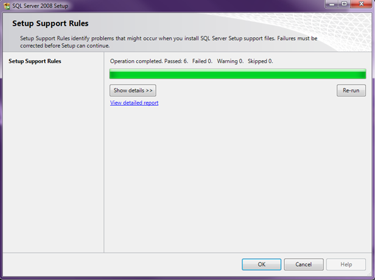
STEP 4: The next step is misleading. The Setup Support Files window looks like it's doing something and stuck on “Gathering user settings.” It's actually waiting for you to click the Install button!
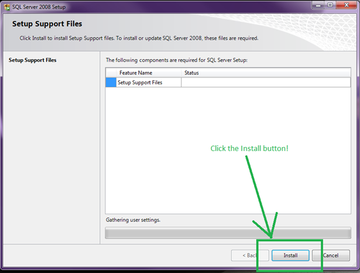
STEP 5: Another rule check. You'll probably end up with a Windows Firewall warning this time. If you want to enable remote access to SQL Server you'll need to configure the firewall later. Since I'm using SQL Server Express for development purposes on this machine only, I won't need to worry about that. Click Next.
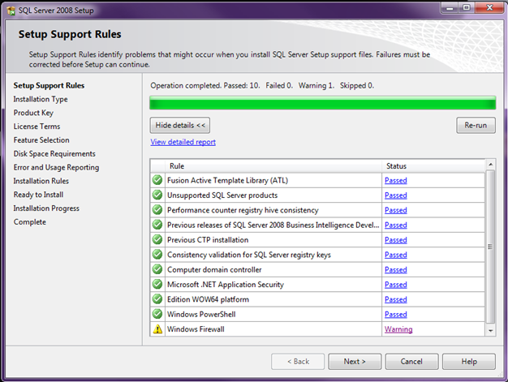
STEP 6: Okay here is the step I always mess up because it's just not intuitive at all. On the Installation Type window you have a choice between “Perform a new installation of SQL Server 2008” OR “Add features to an existing instance of SQL Server 2008”. You need to select new installation, NOT add features. I know I know, totally weird. You would think that since you just want to add SSMS that it would be Add features to existing instance – I mean I don't want a new instance, just the dang tools. Sigh. Click Next.
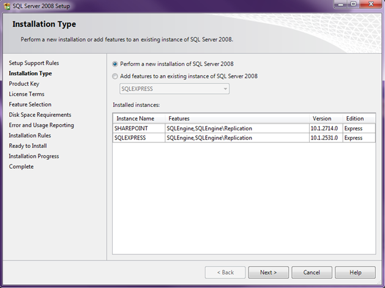
STEP 7: Next you get the Product Key window. You obviously don't need a product key for SQL Server Express since it's free so just click Next.
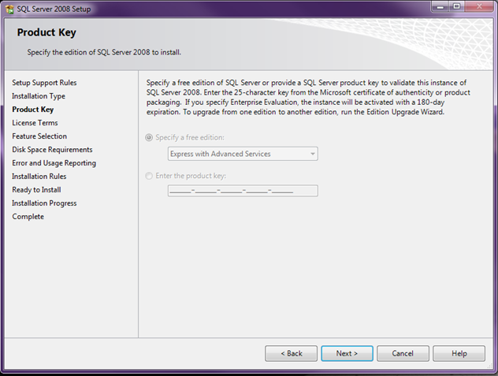
STEP 8: Accept the License Terms and click Next.
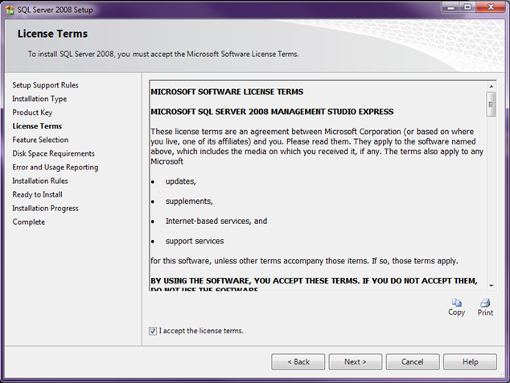
STEP 9: Okay now for the window we've all been waiting for - Feature Selection. Check off “Management Tools – Basic” and then click Next.
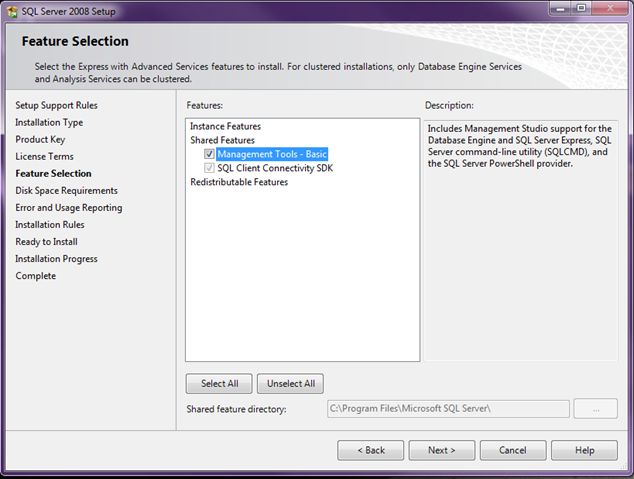
STEP 10: Verify your disk space requirements and click Next.
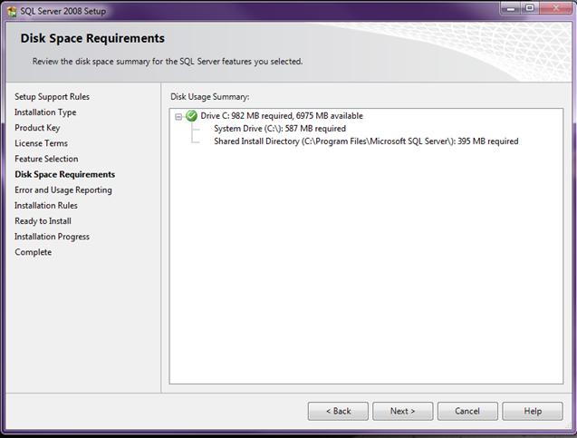
STEP 11: Help Microsoft improve SQL Server features and services by selecting to send usage and error reports to them (or not). Click Next.
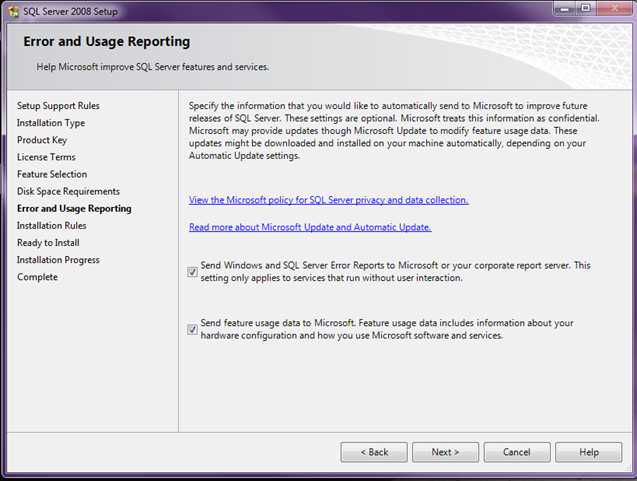
STEP 12: Another quick rule check runs. Click Next.
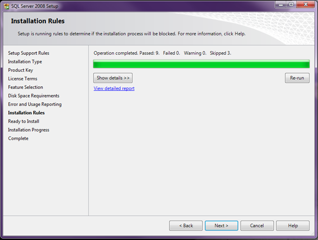
STEP 13: Now it looks like we're ready to install. Click the Install button.
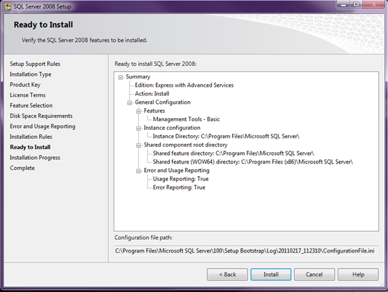
The install will kick off and will take about 5 minutes to complete.
STEP 14: Once the installation completes, click the Next button again.
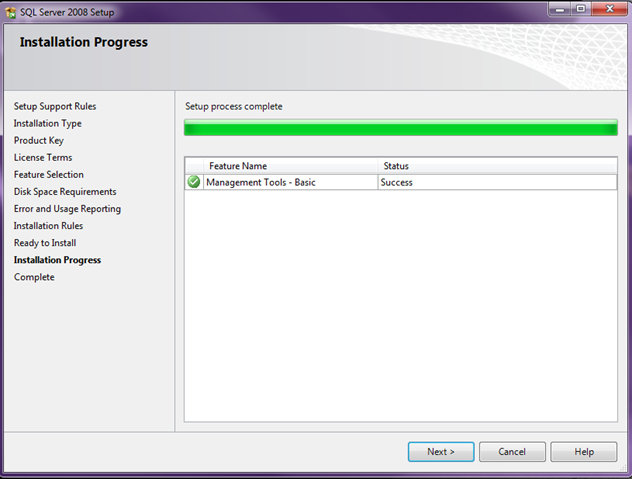
STEP 15: Complete! Click the Close button and you should be all set.
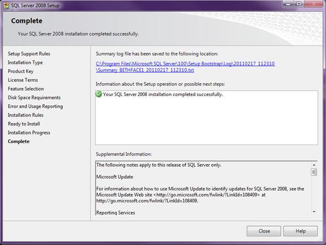
STEP 16: Fire up SQL Server Management Studio! You should now see it in your Programs under Microsoft SQL Server 2008. Make sure you run it as an administrator for access to all the features.
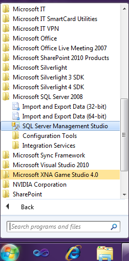